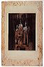

Cliquez sur l'image en esquisse pour
avoir la grande image. Une nouvelle fenêtre ouvrira; fermez-la pour
retourner à cette page.
Voici le code des sources des dessins et des images:
Chaos = Jean-Jacques Lebel et Marie-Laure Prévost, Du chaos
dans le pinceau . . .Victor Hugo: dessins. Paris Musées, édition
des musées de la Ville de Paris, 2000.
Océan = Victor Hugo: l'homme océan, Ed. by Marie-Laure
Prévost. Paris: Bibliothèque nationale de France/Seuil, 2002.
|  | ||||||
| «MARINE
TERRACE» [la maison de Hugo à Jersey] (Chaos) |
«Jersey.
1855» (Chaos) |
Cheminée de la salle à manger de Hauteville House [à la maison de Hugo à Guernsey] (#20b) (Chaos) |
Cheminée
de la salle à manger de Hauteville House [à la maison de Hugo à Guernsey] (#20a) (Chaos) |
Paysage guernesiais |
«Guernesey-Hauteville
House» (Océan) |
Cheminée de la salle à manger
de Hauteville House |
| Cheminée
de la salle à manger de Hauteville House (Océan) |
La
demeure de Hugo--Tête d'Aigle (Océan) |
«Guernesey/le bouge de/la Saleria/16
mars/1865» |
Exil (Océan) |
Dolmen
où m'a parlé la bouche d'ombre (Océan) |
Back to "Dessins" index | Continue to browse in "Dessins" list | Back to Hugo home page